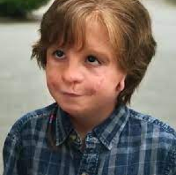
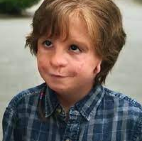

Extraordinário
Wonder é um romance infantil escrito por Raquel Jaramillo, sob o pseudônimo R. J. Palacio.
Publicada em 14 de fevereiro de 2012,
conta a história de Auggie Pullman,
um garoto que sofre da síndrome de Treacher Collins, que causa deformação facial.
Publicada em 14 de fevereiro de 2012,
conta a história de Auggie Pullman,
um garoto que sofre da síndrome de Treacher Collins, que causa deformação facial.
Data da primeira publicação: 14 de fevereiro de 2012
Autora: R. J. Palacio
Ilustradora: R. J. Palacio
Seguido por: O Capítulo do Julian
Gêneros: Romance, Ficção, Literatura infantil
Editor: Alfred A. Knopf
Autora: R. J. Palacio
Ilustradora: R. J. Palacio
Seguido por: O Capítulo do Julian
Gêneros: Romance, Ficção, Literatura infantil
Editor: Alfred A. Knopf
Extraordinário
 
O Capítulo do Julian

O Capítulo do JulianGêneros: Romance, Ficção, Literatura infantil
Editor: Alfred A. Knopf